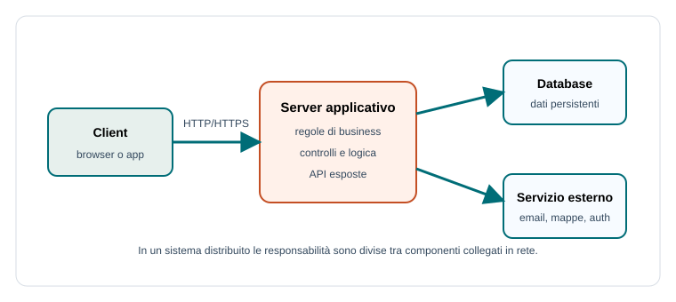

Capitoletto 1
Architetture delle applicazioni
L'architettura di un'applicazione descrive come il software è diviso in parti, quali responsabilità ha ogni parte e come le parti comunicano. Una buona architettura rende il sistema più comprensibile, modificabile e affidabile.
Obiettivi della lezione
- Distinguere applicazioni monolitiche, a livelli e distribuite.
- Capire perché si separano presentazione, logica e dati.
- Riconoscere vantaggi e rischi della distribuzione.
- Collegare architettura, scalabilità, disponibilità e manutenzione.
Che cos'è un'architettura software
L'architettura è l'organizzazione generale del sistema. Non riguarda solo i file del progetto, ma le decisioni importanti: quali moduli esistono, dove sono i dati, chi esegue le regole, quali componenti parlano tra loro e quali tecnologie permettono l'esecuzione.
In TPSIT l'architettura collega progettazione, programmazione di rete, basi di dati e gestione dei sistemi. Un'applicazione moderna è spesso una rete di componenti: browser, server, database, API e servizi esterni.
Monolite e applicazione distribuita
Un'applicazione monolitica concentra molte funzionalità in un unico sistema aggiornato come un solo blocco. È semplice da avviare e capire nei progetti piccoli. Un'applicazione distribuita divide il lavoro tra componenti separati, spesso eseguiti su macchine o ambienti diversi.

| Tipo | Vantaggi | Rischi |
|---|---|---|
| Monolite | Semplice da sviluppare, testare e distribuire all'inizio. | Crescendo può diventare difficile da modificare e scalare. |
| Distribuita | Separa responsabilità e permette scalabilità selettiva. | Aumenta complessità, latenza e gestione dei guasti. |
Architettura a livelli
Una scelta molto comune è dividere l'applicazione in livelli. Il livello di presentazione gestisce ciò che vede l'utente, la logica applicativa applica le regole, l'accesso ai dati legge e scrive le informazioni, la persistenza conserva i dati nel tempo.
| Livello | Responsabilità | Esempio |
|---|---|---|
| Presentazione | Interfaccia e interazione con l'utente. | Pagina web per prenotare un laboratorio. |
| Logica applicativa | Regole e controlli. | Impedire due prenotazioni sovrapposte. |
| Accesso ai dati | Query e operazioni controllate. | Ricerca delle prenotazioni nel database. |
| Persistenza | Conservazione stabile. | Database o file. |
Accoppiamento e coesione
Un componente ha alta coesione quando svolge responsabilità collegate tra loro. Ha basso accoppiamento quando dipende poco dai dettagli interni degli altri componenti. Questi due principi aiutano a progettare sistemi manutenibili.
Per esempio, il modulo che invia email non dovrebbe conoscere tutta la logica dei voti o delle prenotazioni. Dovrebbe ricevere un messaggio chiaro e occuparsi solo dell'invio.
Scalabilità, disponibilità e guasti parziali
La scalabilità è la capacità di reggere più utenti o più lavoro. La disponibilità è la capacità di restare utilizzabile. Nei sistemi distribuiti esistono anche i guasti parziali: un componente funziona, un altro è lento o non raggiungibile.
- Un database lento può rallentare tutto il servizio.
- Un servizio esterno non raggiungibile può impedire l'invio di email.
- Una rete instabile può produrre timeout anche se il codice è corretto.
Esempio guidato
Una piattaforma scolastica può essere divisa così: browser degli studenti, server applicativo, database, servizio email e servizio di autenticazione. Ogni parte ha un compito; se cambia il servizio email, il resto dovrebbe continuare a funzionare con poche modifiche.
Esercizi guidati
- Dividi un registro elettronico in livelli: presentazione, logica, dati e persistenza.
- Scrivi due vantaggi e due rischi di un'architettura distribuita.
- Spiega la differenza tra scalabilità e disponibilità.
Domande con risposta semplice
Perché si separano i livelli?
Per rendere il sistema più chiaro, modificabile e testabile. Ogni livello ha responsabilità diverse.
Un sistema distribuito è sempre migliore?
No. Offre flessibilità e scalabilità, ma introduce rete, latenza, coordinamento e guasti parziali.
Che cosa significa basso accoppiamento?
Significa che un componente dipende poco dai dettagli interni degli altri componenti.
Per ripassare
Ricorda: architettura significa divisione delle responsabilità. Valuta sempre componenti, comunicazione, dati, guasti e possibilità di crescita.